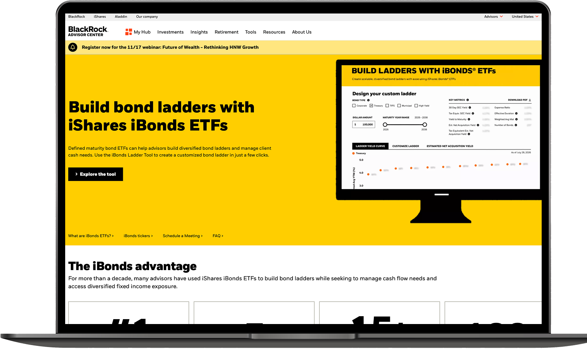
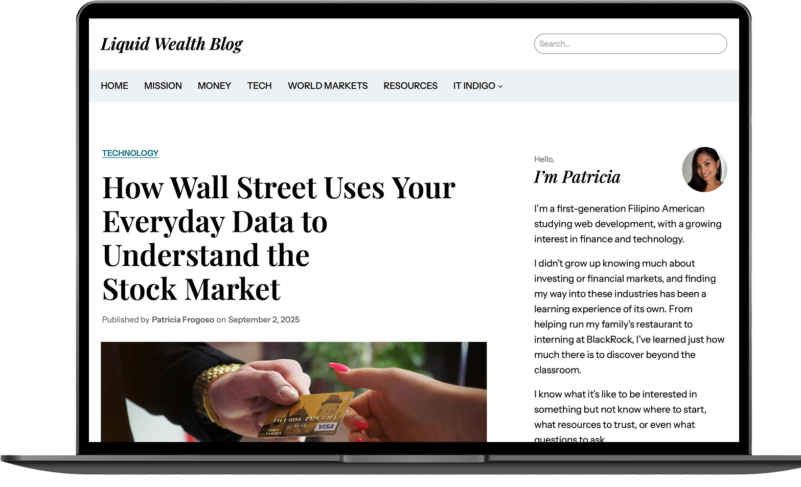

PATRICIA
FROGOSO
FINANCIAL SERVICES · TECHNOLOGY · CLIENT STRATEGY
HERE TO
MAKE
BIG IDEAS
HAPPEN.
Hi, I'm Patricia! I've always loved a good story, especially the kind that starts with a simple idea and grows into something bigger than anyone imagined.
My journey has taken me from helping grow my family's restaurant to working in tech, design, and investment product marketing at BlackRock. Along the way, I've learned that the best ideas bring together people, creativity, and a little courage.
Today, I'm bringing those experiences together through my interest in financial services, technology, and digital strategy.
READ MY STORYSNEAK PEEK OF MY RECENT WORK

BLACKROCK
Product Marketing · Financial Services

LIQUID WEALTH
Financial Education · Digital Storytelling

LITTLE RED RIVER FOUNDATION
Web Development · Digital Strategy

HISTORY OF JPMORGAN CHASE
Web Design · Research